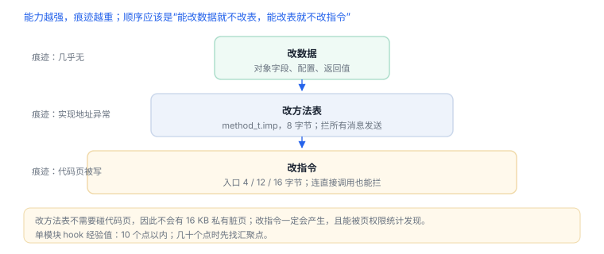
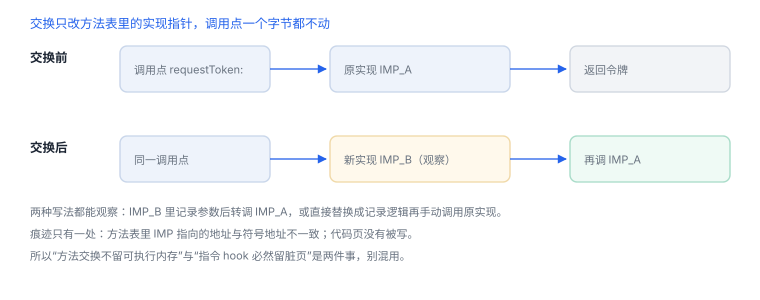
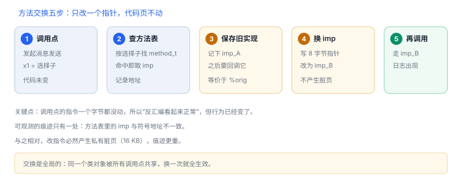

hook 原理：改数据、改方法表、改指令
改数据、改方法表、改指令——三种手法各有明确的字节数与痕迹
插桩的本质是让一次调用走到你指定的地方。手法只有三类，能力与痕迹成反比：改数据最轻，改方法表居中，改指令最重。下面的数字都是 arm64 iOS 上的实际量级，不是比喻。
场景 交换返回成功，调用点也确实走到了新实现，可要观察的那条路径始终没出现。原因常在更早一步：这次调用根本没走消息发送。
1. 三种改法
| 手法 | 改什么 | 能拦到什么 | 留下的痕迹 |
|---|---|---|---|
| 改数据 | 对象字段、配置、返回值 | 依赖该数据的判断 | 几乎无（不触碰代码与元数据） |
| 改方法表 | method_t.imp（8 字节） | 所有走 objc_msgSend 的调用 | 方法实现指针与符号地址不一致 |
| 改指令 | 函数入口前 4–16 字节 | 连直接调用、C 函数也能拦 | 代码段被写、页权限变化、签名不再匹配 |
选择顺序应该是：能用数据解决就不改方法表，能改方法表就不改指令。这和“能用户态就不内核态”是同一套成本逻辑。
2. 方法交换改的是哪 8 个字节
Objective-C 的方法在运行时是一条结构：方法名、类型编码、实现指针。交换只改最后的实现指针：
struct method_t {
SEL name; // 选择子
const char *types; // 类型编码，如 "v24@0:8@16"
MethodListIMP imp; // 实现地址，8 字节
};关键的实现细节：类在首次使用时，运行时会把只读的原始方法列表复制到可写列表，之后查找走可写副本。因此你交换的是副本里的 imp，__DATA_CONST 中的原始列表不变。这解释了两个现象：交换对后续所有调用生效；而静态查看二进制时看不到任何改动。



3. 原理推演：改指令为什么必然产生脏页
代码页由内核映射为“只读 + 可执行”。这不是策略，而是 MMU 的权限位：任何写入都会触发保护异常。所以要改指令，必须先把那一页改成可写。
改完可写后，这一页不再是与其他进程共享的干净页，而是本进程私有的一份副本——写时复制的必然结果。因此“hook 指令一定留脏页”不是实现缺陷，是想改代码就得付的代价；这也是为什么 16 KB 页在 iOS 上格外显眼：一次入口改写就多出 16 KB 私有内存。
4. 为什么有些方法交换不了
| 情况 | 原因 | 表现 |
|---|---|---|
Swift final 方法 | 静态派发，不查方法表 | 交换成功但调用点不受影响 |
未标 @objc 的 Swift 方法 | 不在 Objective-C 方法列表里 | class_getInstanceMethod 返回空 |
| 协议扩展方法 | 见证表派发，非消息发送 | 换掉具体类型的实现也没用 |
| 被内联的短函数 | 调用点没有函数调用 | 断点与交换都不命中 |
5. 动手：在自有应用里看见交换
Method m = class_getInstanceMethod([LoginService class], @selector(requestToken:));
IMP before = method_getImplementation(m);
method_exchangeImplementations(m, class_getInstanceMethod([LoginService class], @selector(loggedRequestToken:)));
IMP after = method_getImplementation(m);
NSLog(@"imp before=%p after=%p", before, after);(lldb) image lookup -n "-[LoginService requestToken:]"
(lldb) br set -n "-[LoginService loggedRequestToken:]"
(lldb) run预期：before 与 after 互换但不相等；调用点仍然写着 requestToken:，实际停在 loggedRequestToken:。如果两者相等，说明选择子写错或方法不存在。
6. 一次真实排查记录：交换后行为没变
- 现象：交换返回成功，日志却没有新实现的输出。
- 先确认调用：在调用点下断点，看是否真的经过
objc_msgSend；若直接跳到实现，说明走了静态派发。 - 再看方法可见性：枚举该类的
$ownMethods，确认交换的选择子存在于方法表里。 - 检查时机：交换是否发生在类注册之前；过早执行时类对象为空，交换会静默失败。
- 结论与限制：记录“调用未走消息发送”，并注明该结论只对当前构建与优化设置成立。
7. 失败分流表
| 现象 | 最可能的原因 | 该查哪里 |
|---|---|---|
| 交换成功但行为没变 | 调用走了静态派发或另一处实现 | 在调用点下断点，看是否经过 objc_msgSend |
| 崩溃：unrecognized selector | 类型编码不匹配，或交换发生在类初始化之前 | 打印 method_getTypeEncoding，检查调用时机 |
| 只有部分入口生效 | 同一功能有多个实现或缓存已建立 | 搜同名选择子，查调用链 |
| 断点停不住 | 断点设在原方法上，而实现已被替换 | 改为在新实现或调用点下断 |
| Swift 方法无效 | 未暴露给 Objective-C 运行时 | 看是否有 @objc/dynamic，或加包装层 |
8. 工程权衡：三种改法怎么选
| 手法 | 能力 | 痕迹 | 维护成本 |
|---|---|---|---|
| 改数据 | 只影响依赖该数据的判断 | 几乎无 | 低，但覆盖面小 |
| 改方法表 | 覆盖所有消息发送 | 实现地址异常 | 中，受派发方式限制 |
| 改指令 | 连直接调用也能拦 | 代码页被写、私有脏页 | 高，需处理并发与签名 |
9. 如果改的是指令，量级是多少
arm64 的指令定长 4 字节，所以“劫持函数入口”只需要替换开头几条指令。不同跳转方案的代价差别很大：
| 方案 | 占用 | 可达范围 | 备注 |
|---|---|---|---|
B imm26 | 4 字节 | ±128 MB | 最省，但跳不远 |
ADRP + ADD + BR | 12 字节 | ±4 GB | 常用折中 |
LDR literal + BR（含 8 字节地址常量） | 16 字节 | 全地址空间 | 需保存/恢复更长前缀 |
iOS arm64 的页大小是 16 KB。第一次写入代码页会触发写时复制，产生一个 16 KB 的私有脏页——这比 Android 常见的 4 KB 页更容易被统计发现。改权限（mprotect）只能恢复可执行属性，抹不掉这页已经私有的状态。
10. 分析者能看到什么
| 观测点 | 能发现什么 |
|---|---|
| 方法实现地址 | 与符号地址不一致，或落在非映像区间 |
| 镜像列表 | 出现未随包分发的库或异常映射 |
| 页权限与脏页 | 代码页变成可写，或私有脏页增长 |
| 代码签名 | 磁盘产物未被改动，但运行期代码已变 |
本节讨论的是“如何在自己的应用上实现与观测”，以及“防护方能看到什么”。不提供针对他人应用的改写或绕过步骤。
延伸：13 运行时元数据 · F02 跳板结构 · 17 代码签名
11. 自测
- 方法交换修改的是方法结构的哪个字段？为什么只读段里的原始列表没有变化？
- 为什么
final修饰的 Swift 方法交换后调用点不受影响？ - iOS arm64 上一次代码页写入会产生多大的私有脏页？这对“隐蔽性”意味着什么？
- 如果防护方比较方法表里的实现地址与符号地址，交换会留下什么信号？